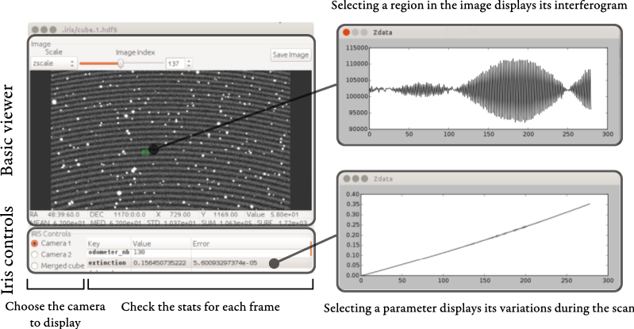

IRIS Guide¶
Iris is made to analyze SITELLE’s raw data as soon as it is obtained. On one hand each image must be analyzed to get stars FWHM, extinction, sky background and guiding shift. On the other hand data must be eye-checked. Two softwares have thus been created:
- iris: which analyzes the data and outputs the result on the standard output.
- iris-viewer: which helps the observer to walk into the analyzed data.
- iris-viewer can be used independently. Each time a new frame has
- been analyzed with iris a message is sent through a socket to the viewer to update its data.
Iris¶
Start Iris¶
iris is a simple command line that takes the image to analyze as an argument. It does not discover new data by itself. Each time a new image has been acquired it can be launched like this:
iris image_path
Note
Iris can be launched anywhere and the given path can be either relative or absolute. If you always launch iris in the same folder don’t forget to set a new reference image for each new target/run.
Reference frame¶
Most of the parameters must be computed against a set of reference parameters (shift, extinction) so that the first image to be analyzed must be taken as a reference. Iris can be told to use a frame as a reference with ‘-r’ option:
iris -r reference_image_path
Output¶
The output of iris is a single line printed on the stdout, e.g.:
1 30 1.81927131216 0.00107911222971 1.83355577149 0.00106765539896 -0.0 4.62888510997e-05 119.280240751 0.0398323042238 0.0 0.00332950208345 0.0 0.00323401996626 0.0 0.00329366699499 0.0 0.00327874916229
The order of the parameters is (see iris.constants.KEY_LIST):
odometer_number star_number fwhm-arc-1 fwhm-arc-1_err fwhm-arc-2 fwhm-arc-2_err extinction extinction_err background background_err dx-pix-1 dx-pix-1_err dy-pix-1 dy-pix-1_err dx-pix-2 dx-pix-2_err dy-pix-2 dy-pix-2_err
A reference file is also created to store reference parameters and the
statistics of each frame analyzed after the reference frame. All the
created files are stored in .iris/.
Iris Viewer¶
The iris-viewer is a viewer based on the orb-viewer which displays the cube made of all the frames acquired after the reference frames. The viewer is updated as soon as a new frame is acquired, you just have to wait for iris to create the merged frame (which can take up to a 5 seconds).
Start the viewer¶
It can be started by typing:
iris-viewer
in the same folder where iris has been launched. In the case you need to start it at another place just give it the path to the IRIS reference file.
Communication port¶
iris tell the iris-viewer when to update by sending a message through a socket. You may want to choose another port for the listener than the one attributed by default (9000) e.g. the viewer has crashed and the socket has not been released or the socket is already used by another program). In this case you can attribute a new socket this way:
iris-viewer -p 8999
But don’t forget to do the same with iris:
iris image_path -p 8999
Using the viewer¶
{kind=link}
Basic controls¶
The basic controls are exactly the same as orb-viewer. In the upper part you can choose the scaling type and the index of the frame to display. It is also possible to save the displayed image in a separate FITS file.
In the frame you can use the following key combinations:
CTRL + right buttonSet the contrast and the scale center value.CTRL + left buttonSpan the image.right buttonDraw a squared region. As soon as the region is drawn the interferogram of the region is displayed in a separate plot.
Note
The interferogram of a region might be very strange because it is a sum of all the interferograms. If you draw a large region (even a few pixels large) you will sum interferograms which have different angles and thus different step size. Their sum is not reliable for emission lines regions (see the image above) but it is reliable if you select a star : it will give you an idea of the transmission curve far from the ZPD. You can select a one pixel region by clicking on the cube without drawing a square.
Iris controls¶
It is possible to choose which camera is displayed. It can be the camera 1, the camera 2 or the merged frame. You’ll notice that the merged frame is only made of little squares around the selected stars. This is because it takes far much time (20 to 30 s instead of 5 s) to transform a whole 2048x2064 frame.
For each frame the computed statistics are also displayed. For the last frame it can take some time to get the stats (30 s in general after the acquisition). By selecting one parameter (e.g the extinction) you will get the plot of its value for all the frames of the cube.